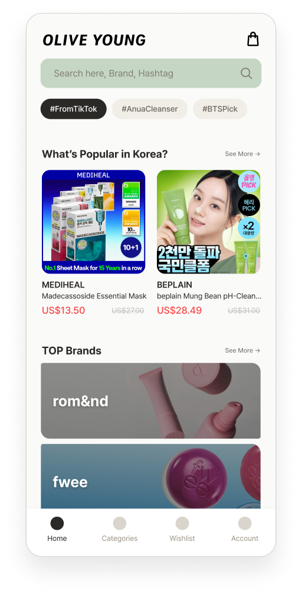
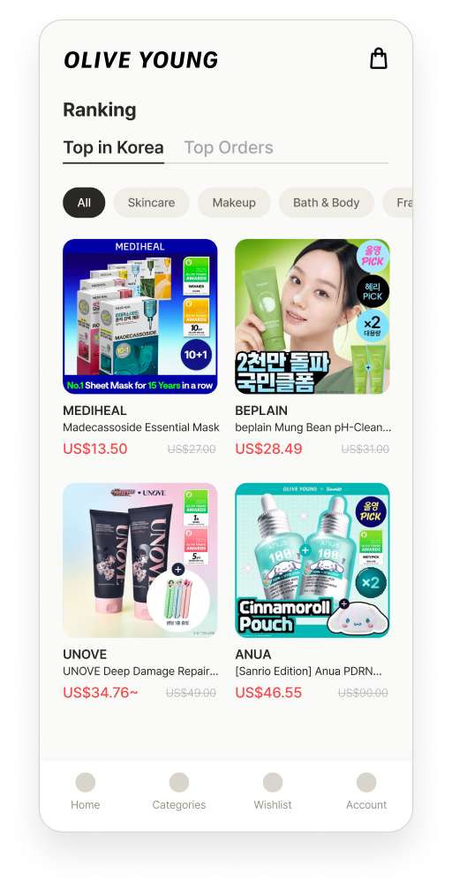
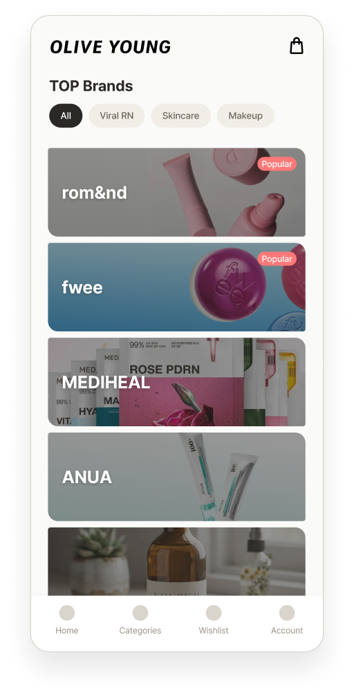
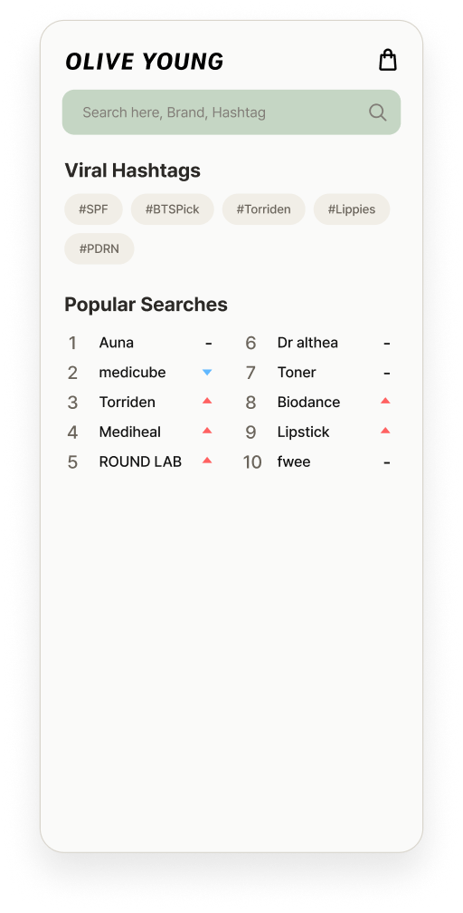

Project 03 — UX/UI Design
올리브영 글로벌 어플리케이션의 문제점을 발견하고, UX를 개선하고자 한 리디자인 케이스 스터디 입니다.
올리브영 글로벌몰 앱을 내려받는 시점 자체가 이미 필터링된 행동이라고 가정했습니다. 한국 화장품에 관심이 없는 사람은 애초에 이 앱을 받지 않는다고 생각합니다. 그렇다면 이 유저는 릴스나 쇼츠에서 스쳐 지나간 제품을 다시 찾으러 온 목적이 뚜렷한 사람이라는 것입니다.
한국 화장품을 구매할 수 있는 해외용 어플리케이션
해외 사용자들이 쉽게 원하는 목적을 달성할 수 있도록 돕는 것입니다.
기능을 더하지 않고 오히려 덜어내는 방향으로 UI를 설계합니다.
배너, 카테고리, 추천, 이벤트, 랭킹이 첫 화면에 한꺼번에 쏟아집니다. 무엇부터 봐야 할지 모른 채 되려 겁먹고 이탈합니다.
한국에서 지금 인기 있는 제품을 보려면 메뉴를 여러 번 거쳐 들어가야 합니다. 정작 가장 찾고 싶은 정보가 가장 깊숙이 숨어 있습니다.
릴스에서 기억해 둔 건 제품명이 아니라 브랜드인 경우가 많습니다. 하지만 인기 브랜드들을 한 눈에 볼 수 있는 UI가 없습니다.
"릴스에서 본 그 크림"을 입력할 방법이 없습니다. 검색은 정확한 제품명을 알고 있어야만 작동합니다.
적은 수의 진입점만 남기고 나머지는 하위 메뉴로 내립니다. 첫 화면의 목적을 “둘러보기”가 아니라 “빠르게 갈아타기”로 바꿉니다.
“한국 실시간 인기”를 랭킹 탭의 첫 화면으로 고정합니다. 메뉴 2~3단계를 거치지 않고, 탭 하나로 도달합니다.
홈에 바이럴 브랜드 카드를 노출하고, 브랜드별로 제품을 모아보는 브랜드관을 새로 만듭니다. “그 브랜드”를 기억하는 유저를 위해서 입니다.
검색창을 크게 키우고 해시태그 검색, 트렌드 키워드 추천을 붙입니다. “릴스에서 본 그 크림”도 태그로 접근 가능하도록 합니다.

진입점을 줄인 홈 화면 — 나머지는 하위 화면으로 이동

“한국 실시간 인기”를 탭의 기본값으로 설정 — 메뉴 단계 없이 바로 도달

브랜드 단위로 모아보는 전용 화면 — 바이럴 브랜드 필터를 포함

해시태그 검색 + 실시간 검색 랭킹 — 제품명을 몰라도 찾을 수 있게 함